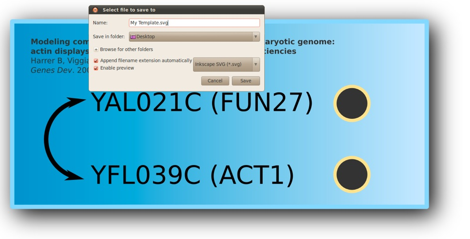

Tutorial
Template design

-
1)Start Inkscape and design your own sketch. In the example below we have created a simple one showing two yeast genes known to genetically interact with each other.
-
2)Add a circle to the right of each gene name
-
3)Select a circle and open the properties dialog box. Fill the label entry with the ORF name of the gene. For example, YAL021C on the figure below.
-
4)Save this sketch under the name ‘My Template.svg’. Warning, you must use the ‘Inkscape SVG’ file format.

SAMPLE R CODE TO USE WITH thIS TEMPLATE
library(SVGMapping)
## Experimental Data (fake)
sampleProtLevel <- matrix(c(10, 20), nrow=2)
rownames(sampleProtLevel) <- c("YAL021C", "YFL039C")
## Gene Annotations (extracted from SGD)
data(yeastAnnotMatrix)
## Create a white-red RGB (remove Alpha) palette with 1-100 levels
myColors <- substr(heat.colors(100),1,7)
## Load template
mySVG <- loadSVG("My Template.svg")
## Map data
myDataSVG(mysvg, numData=sampleProtLevel,
annotation=yeastAnnotMatrix,
col=myColors)
## Show SVG
showSVG(mySVG)